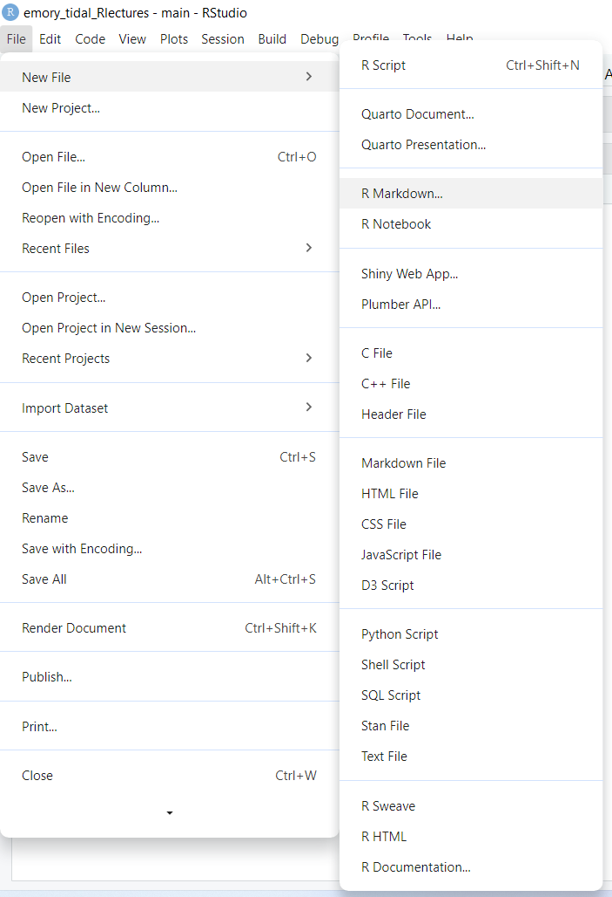
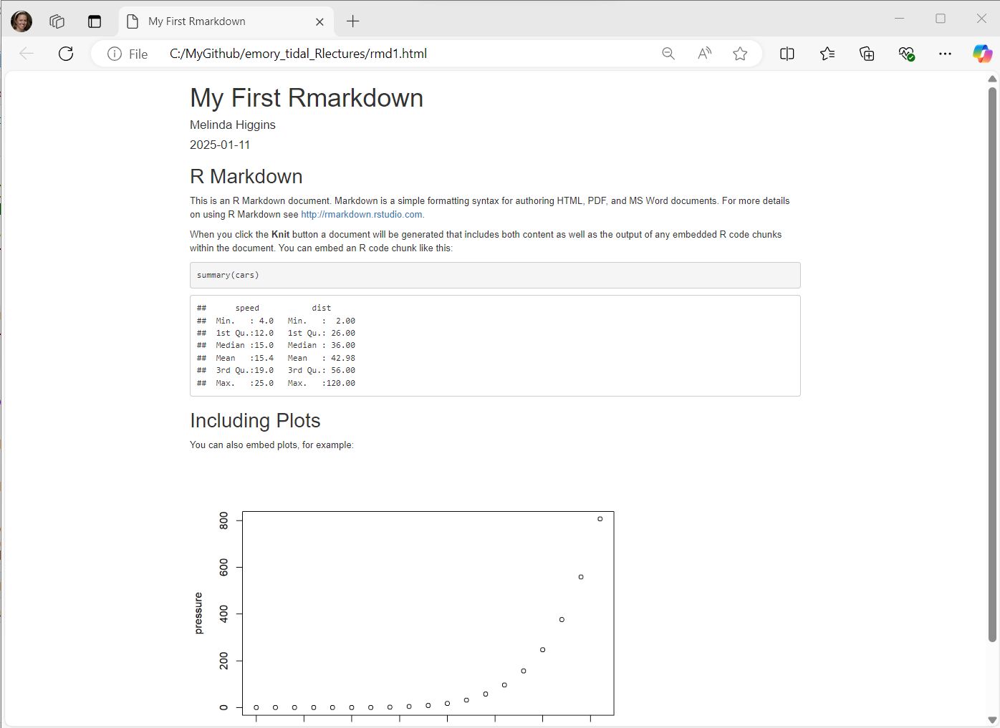

5 + 5[1] 10(Asynchronous-Online)
When you download R from CRAN and install it on your computer, there is a R application that you can run. However, it is very bare bones. Here is a screenshot of what it looks like on my computer (Windows 11 operating system).

You can type commands in the console window at the prompt “>” but this is slow and tedious. You can also write and execute scripts from inside this application and see the output back in the console window as well as creating plots. But managing large projects using this interface is not efficient.

The RStudio Integrated Development Environment (IDE) application provides much better tools for managing files within a given “project”. This biggest advantage of working in an IDE is everything is contained and managed within a given project, which is linked to a specific folder (container) on your compute (or cloud drive you may have access to).
However, you will still need to write and execute code using scripts and related files. An IDE is NOT a GUI (graphical user interface) which is the “point and click” workflow you may have experience with if you’ve used other analysis software applications such as SPSS, SAS Studio, Excel and similar.
The interface is usually arranged with the following 4 “panes” or windows:
The typical arrangement, usually has the “Console” window pane at the bottom left. This window also usually has a TAB for the “terminal” and any “background jobs” that might be running.
The “Source” window pane is usually at the top left. This is where you will do most of your editing of your R program scripts (*.R) or Rmarkdown files *.Rmd). This is also where the data viewer window will open. You can also open and edit other kinds of files here as well (*.tex, *.css, *.txt, and more).
The top right window pane should always have your “Environment”, “History” and “Tutorial” TABS but may also have TABS for “Build” and”Git” depending on your project type and options selected.

The bottom right window pane has TABS for your:
You also have the option to rearrange your window panes as well as change the look and feel of your programming interface and much more. To explore all of your options, click on the menu at the top for “Tools/Global Options”:

Take a look at the left side for the list of all of the options. Some of the most useful options to be aware of are:
In the “General” tab, this is where you can see and confirm that R is installed and where the R programming language app is installed on your computer.

You will probably want to explore tuning these appearance parameters to customize the appears to your preferences. For example, you can change the ZOOM level to improve readability. You may also want to change the FONT sizes for the Editor and Help windows as needed. I also encourage you to try out different Editor Themes which will change the colors of the R code as well as background colors (light or dark).
I would suggest NOT changing the layout of the window panes until you are very familiar with the default settings. But this is where you can see what the default settings are and what other options are available to you.
So, let’s start with some simple R code using the Console window and typing commands at the > prompt.
You can write simple math expressions like 5 + 5.
5 + 5[1] 10Notice that the output shows the number 1 enclosed in square brackets followed by the answer (or output) of 10.
[1] 10
This is because R performed the addition operation using the + operator and then “saved” the output in temporary memory as a scalar object with 1 element, which is the number 10.
You can actually see this temporary object by typing .Last.value
.Last.value
[1] 10However, if we look at our current computing environment (see upper right window pane), it is still showing as empty.
This is because we have not yet “saved” the output into an object that we created. Let’s save this output into an object called ten.
To do this we need to do 2 things:
ten
<- to take the result of 5 + 5 and move it (save it or pipe it) into the object ten.ten <- 5 + 5To “see” the output of this object - you can either see it now in your Global Environment or type the object name in the Console to view it.
ten[1] 10It is important to remember that R is an “object-oriented” programming language - everything in R is an object.
There are several built in “constants” in R. Try typing these in at the Console to see the results.
pi[1] 3.141593letters [1] "a" "b" "c" "d" "e" "f" "g" "h" "i" "j" "k" "l" "m" "n" "o" "p" "q" "r" "s"
[20] "t" "u" "v" "w" "x" "y" "z"LETTERS [1] "A" "B" "C" "D" "E" "F" "G" "H" "I" "J" "K" "L" "M" "N" "O" "P" "Q" "R" "S"
[20] "T" "U" "V" "W" "X" "Y" "Z"month.name [1] "January" "February" "March" "April" "May" "June"
[7] "July" "August" "September" "October" "November" "December" For the constants like letters you get a list of the 26 lower case letters. Notice that the number in [square brackets] updates for each new line printed out. This allows you to keep track of the number of elements in the output object. letters is an “character” array with 26 elements.
To confirm these details, we can use the class() function to determine that letters has all “character” elements. The length() function will let you know that there are 26 elements.
If you would like to learn more about these built-in “constants”, you can get help in one of two ways. You can either type help(pi) in the Console (lower left) or type pi in the Help window (lower right).
help(pi)The majority of the R programming language functionality is driven by functions. Technically the + operator is actually a function that performs a sum.
You can even get help on these operators, by typing help("+"). We have to add the quotes "" so that R knows we are looking for this operator and not trying to perform an addition operation inside the function call.
help("+")But let’s try a function to create a sequence of numbers - for example, a sequence from 1 to 10.
seq(10) [1] 1 2 3 4 5 6 7 8 9 10And let’s look at the help page for the seq() function.

R allows for what is called “lazy” coding. This basically means you can provide very minimal input and R will try to figure out what you want using the default settings for a given function. In the case of seq() the function begins by default at 1 and creates and output in steps of 1 up to the value of 10.
While “lazy” coding practices are common with R, it would actually be better to explicitly define each argument to make sure you get the exact output you want. To do this, inside the parentheses () assign a value to each argument. For example:
seq(from = 1,
to = 10,
by = 1) [1] 1 2 3 4 5 6 7 8 9 10You could easily change these to get a sequence from 0 to 1 in steps of 0.1 as follows:
seq(from = 0,
to = 1,
by = 0.1) [1] 0.0 0.1 0.2 0.3 0.4 0.5 0.6 0.7 0.8 0.9 1.0So, as you can tell, the R Console is useful but slow and tedious. Let’s create an R script to save all of these commands in a file that we can easily access everything we’ve done so far and re-run these commands as needed.
In RStudio go to the top menu File/New File/R Script:
Once the R Script file is created, type in some of the commands we did above in the Console and put one command on each line.
Just select each line and click “Run”.
Then you can save the file on your computer as “myscript.R” for example.
You can also select all of the rows and click run to see the output in the Console Window.

Here is the code and output:
Let’s try out some more built-in R functions, save the output in objects in the environment and then use them in other functions.
Create a sequence of numbers and save them as an object called x. I also added a comment in the R code block below. Everything after the # hashtag is a comment which R will ignore. It is a good idea to add comments in your code to make sure that you and others understand what each part of your code does.
# save sequence of numbers
# from 1 to 10 in steps of 0.5
# in an object named x
x <- seq(from=1, to=10, by=0.5)
# Type x to view the contents
x [1] 1.0 1.5 2.0 2.5 3.0 3.5 4.0 4.5 5.0 5.5 6.0 6.5 7.0 7.5 8.0
[16] 8.5 9.0 9.5 10.0Also take a look at the Global Environment to see the new object x.
# use x to create new object y
y <- x*xOnce the object y is created, we can make a simple 2-dimensional scatterplot.
# plot x and y
plot(x,y)
The plot is shown below, but if you are running this in the RStudio desktop, check the Plots window pane (lower right).
Download Rscript_01.R open it in your RStudio and run through the code. Try out new variations on your own.
sessionInfo()While the base installation of R is pretty powerful on it’s own, the beauty of R and the R programming community is that there are literally hundreds of thousands if not millions of people programming in R and creating new functions everyday.
In order to use these new functions, the developers put them together in packages that we can install to extend the functionality of R.
But first, let’s take a look at the packages that are part of the basic installation of R. One way to see which packages are currently installed and loaded into your current R computing session, is by typing sessionInfo().
You will also notice that the sessionInfo() command also lists the version of R I’m currently running (4.4.2), my operating system (Windows 11) and and my locale (USA, East Coast). These details can sometimes be helpful for collaborating with others who may be working with different system settings and for debugging errors.
sessionInfo()The basic installation of R includes 7 packages:
statsgraphicsgrDevicesutilsdatasetsmethodsbaseTo learn more click on the Packages tan in the lower right window pane to see the list of packages installed on your computer. I have a lot of Packages, but here is a screenshot of the base packages.
See the packages listed under “System Library” which are the ones that were installed with base R. You’ll notice that only some of these have checkmarks next to them. The checkmark means those are also loaded into your R session. Only some of them are loaded into memory by default to minimize the use of your computer’s memory.
Let’s install an R package, like ggplot2.
Go to the RStudio menu Tools/Install Packages
This will then open up a window where you can type in the name of the package you want. As soon as we start typing ggplot2 the menu begins listing all packages with that partial spelling…
You’ll notice that there are 3 parts to the installation:
Using the Tools/Install Packages menu from within RStudio automatically links to CRAN, which is the “The Comprehensive R Archive Network”. You’ve already been here once to download and install the R programming language application.
However, you can also click on “Packages” at the left to see the full list of packages currently available. As of right now (01/10/2025 at 5:12pm EST) there are 21,872 packages. This number increases every day as people create, validate and publish their packages on CRAN. You can get a list of all of the packages or if you have no idea what package you need, you can also look at the “Task Views” to see groupings of packages.
Here is what the list of Packages looks like sorted by name:
However, you can also browse Packages by “Task View”:
For example, suppose you are interested in survival analysis, here is a screenshot of the Survival Task View.
As you can see each Task View has a person(s) listed who help to maintain these collections. As you scroll through the webpage, you’ll see links to packages they recommend along with a description of what the packages do. For example, see the links below to the survival and rms packages.
While the list of R packages on CRAN is impressive, if you plan to do analyses of biological data, there is a good chance you will need a package from Bioconductor.org.
As of right now (01/10/2025 at 6:45pm EST) there are 2289 packages. Similar to CRAN, Bioconductor requires each package to meet certain validation criteria and code testing requirements even more stringent than CRAN. You notice that you can search for packages under the biocViews (left side column) or you can sort them alphabetically or search for individual packages in the section on the right side.
The one disadvantage of R packages from Bioconductor is that you cannot install them directly using the RStudio menu for Tools/Install Packages - you cannot “see” the Bioconductor repository from inside RStudio. Instead you have to install these using R code. For example, here is what you need to do to install the phyloseq package which “… provides a set of classes and tools to facilitate the import, storage, analysis, and graphical display of microbiome census data”.
See the black box of code below, to install phyloseq you need to:
BiocManager from CRAN - this you can install from the RStudio menu for Tools/Install Packages.install.packages("BiocManager")In addition to CRAN and Bioconductor, you can get packages from Github, friends, teammates or write your own. To get an idea of how many packages may be currently on Github, we can “search” for “R package” https://github.com/search?q=R+package&type=repositories and as you can see this is well over 118,000+ packages.
While you can find packages on Github that have not (yet) been published on CRAN or Bioconductor, the developers of packages currently on CRAN and Bioconductor also often publish their development version (think of these as in “beta” and still under going testing) on Github. For example, the current published version of the data wrangling dplyr package was last updated on 11/17/2023.
But the development version of dplyr on Github was last updated 5 months ago in August 2024.
So, while the developers haven’t published this on CRAN, if you want to test out new functions and updates under development for this package, you can go to the R Console or write a R script to install the development version using these commands (see below) which is explained on the dplyr on Github website.
# install.packages("pak")
pak::pak("tidyverse/dplyr")
So, as you have seen there are numerous ways to find R packages and there are hundreds of thousands of them out there. Your company or team may have their own custom R package tailored for your specific research areas and data analysis workflows.
Finding R packages is similar to finding new questionnaires, surveys or instruments for your research. For example, if you want to measures someone’s depression levels, you would probably use a validated instrument like the Center for Epidemiological Studies-Depression (CESD) or the Beck Depression Index (BDI). These measures have been well published and are well established for depression research.
Finding R packages is similar - do your research! Make sure that the R package has been published and is well established to do the analysis you want. In terms of reliability, getting packages from CRAN or Bioconductor are the best followed by Github or other individuals. The best suggestion is look to see which R packages are being used by other people in your field.
To get an idea of how long a package has been in use and if it is still being actively supported and how it relates to other similar packages, check out this interactive Shiny app website for CRAN downloads. Type in the packages you want to compare and changes the dates - here is an example comparing arsenal, gtsummary, and tableone packages all of which are useful for making tables of summary statistics (aka, “Table 1”) - showing the number of downloads since the beginning of Jan 1, 2024.
As you can see the most downloaded is gtsummary followed by arsenal with tableone having the fewest downloads. This does NOT necessarily imply quality, but it does give you some insight into the popularity of these packages.
Here is an example of 2 specific packages I like. The rggobi package which was great for visualizing multiple dimensions of data simultaneously but which is no longer supported and the newer tourr package which was written by the same developer to replace the rggobi package. You can see that in the middle of 2020, the number of downloads for rggobi dropped almost to 0 and the tourr package downloads started to rise - this is about when they switched over from maintaining one package to supporting the newer one. rggobi on CRAN moved to archived status in July 2020, but tourr on CRAN was last updated in April 2024.
So, do your homework and check to see when the package was last updated, who maintains it and how good their documentation is for the package and what it does.
After you’ve decided what package you want and have installed it onto your computer, you must load it into memory for EVERY new R session for which you want those functions available.
For example, suppose I want to make a plot using the ggplot2 package. Before I can use the ggplot() function, I have to load that package into my computing session. Here is an example:
# show current sessionInfo
sessionInfo()R version 4.4.2 (2024-10-31 ucrt)
Platform: x86_64-w64-mingw32/x64
Running under: Windows 11 x64 (build 22000)
Matrix products: default
locale:
[1] LC_COLLATE=English_United States.utf8
[2] LC_CTYPE=English_United States.utf8
[3] LC_MONETARY=English_United States.utf8
[4] LC_NUMERIC=C
[5] LC_TIME=English_United States.utf8
time zone: America/New_York
tzcode source: internal
attached base packages:
[1] stats graphics grDevices utils datasets methods base
loaded via a namespace (and not attached):
[1] htmlwidgets_1.6.4 compiler_4.4.2 fastmap_1.1.1 cli_3.6.3
[5] tools_4.4.2 htmltools_0.5.8.1 rstudioapi_0.15.0 yaml_2.3.8
[9] rmarkdown_2.26 knitr_1.49 jsonlite_1.8.8 xfun_0.49
[13] digest_0.6.35 rlang_1.1.4 evaluate_0.23 # notice that ggplot2 is not listed
# but let's try the ggplot() function with the
# built-in pressure dataset
ggplot(pressure, aes(temperature, pressure)) +
geom_point()Error in ggplot(pressure, aes(temperature, pressure)): could not find function "ggplot"This will generate an error since these functions are not yet available in our session. So, use the library() function to LOAD the ggplot2 functions into current working memory.
# load ggplot2 package
library(ggplot2)
# look at sessionInfo again
sessionInfo()R version 4.4.2 (2024-10-31 ucrt)
Platform: x86_64-w64-mingw32/x64
Running under: Windows 11 x64 (build 22000)
Matrix products: default
locale:
[1] LC_COLLATE=English_United States.utf8
[2] LC_CTYPE=English_United States.utf8
[3] LC_MONETARY=English_United States.utf8
[4] LC_NUMERIC=C
[5] LC_TIME=English_United States.utf8
time zone: America/New_York
tzcode source: internal
attached base packages:
[1] stats graphics grDevices utils datasets methods base
other attached packages:
[1] ggplot2_3.5.1
loaded via a namespace (and not attached):
[1] vctrs_0.6.5 cli_3.6.3 knitr_1.49 rlang_1.1.4
[5] xfun_0.49 generics_0.1.3 jsonlite_1.8.8 glue_1.8.0
[9] colorspace_2.1-0 htmltools_0.5.8.1 scales_1.3.0 fansi_1.0.6
[13] rmarkdown_2.26 grid_4.4.2 evaluate_0.23 munsell_0.5.0
[17] tibble_3.2.1 fastmap_1.1.1 yaml_2.3.8 lifecycle_1.0.4
[21] compiler_4.4.2 dplyr_1.1.4 htmlwidgets_1.6.4 pkgconfig_2.0.3
[25] rstudioapi_0.15.0 digest_0.6.35 R6_2.5.1 tidyselect_1.2.1
[29] utf8_1.2.4 pillar_1.9.0 magrittr_2.0.3 withr_3.0.2
[33] tools_4.4.2 gtable_0.3.6 Notice that under other attached packages we can now see ggplot2_3.5.1 indicating that yes ggplot2 is installed and in memory and that version 3.5.1 is the version you are currently using.
Let’s try the plot again.
# try the plot again
ggplot(pressure, aes(temperature, pressure)) +
geom_point()
We will do more in the later lesson 1.3.6: Putting reproducible research principles into practice, but let’s take a look at an Rmarkdown file and how we can use it to create a report that combines and links together data + code + documentation to produce a seamless report.
Go to the RStudio menu and click File/New File/R Markdown:

Type in a title, your name, the date and choose the format you’d like to create. For your first documents I encourage you to try HTML first. But you can create WORD documents and even PDFs. In addition to documents, you can create slide deck presentations, Shiny apps and other custom products like R packages, websites, books and many more.
To get started, use the built-in template:
*.html file.
tinytex https://yihui.org/tinytex/ R package will work.Here is the Example RMarkdown Template provided by RStudio to help you get started.
This document consists of the following 3 key sections:
Notice that the code block starts and ends with 3 backticks ``` and includes the {r} Rlanguage designation inside the curly braces.
Rmarkdown can be used for many different programming languages including python, sas, and more, see rmarkdown - language-engines.
And along with the R code blocks, we can also create our document with “marked up (or marked down)” text. Rmarkdown is a version of “markdown” which is a simplified set of tags that tell the computer how you want a piece of text formatted. For example putting 2 asterisks ** before and after a word will make it bold, putting one _ underscore before and after a word will make the word italics; one or more hashtags # indicate a header at certain levels, e.g. 2 hashtags ## indicate a header level 2.
I encourage you to go through the step by step tutorial at https://rmarkdown.rstudio.com/lesson-1.html.
Here are all 3 sections outlined.
At the top of the page you’ll notice a little blue button that says “knit” - this will “knit” (or combine) the output from the R code chunks and format the text as “marked up” and produce the HTML file:
